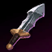
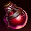
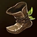
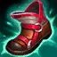
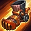

Objetos iniciales en League of Legends
| Nombre | Descripción | Imagen |
|---|---|---|
| Espada de doran | Aumentan el daño físico que causan los personajes. |  |
| pociones | Aumentan la velocidad de regeneración de la salud de los personajes. |  |
| item inicial de jungla | Aumentan la velocidad de movimiento de los personajes. |  |
Armaduras en League of Legends
| Nombre | Descripción | Imagen |
|---|---|---|
| Armadruda de tela | Aumenta la resistencia física de los personajes |  |
| Armadura de resistencia mágica | Aumenta la resistencia mágica de los personajes. |  |
Botas en League of Legends
| Nombre | Descripción | Imagen |
|---|---|---|
| Botas | Aumentan la velocudad de movimiento de los personajes. | |
| Botas de penetración mágica | Aumentan la penetración mágica de los personajes. |  |
| Botas de mercurio | Aunmentan la resistencia mágica de los personajes. |  |
| Botas jonias | Reduce los cooldowns de los personajes. |  |
| Botas de movilidad | Aumenta la velocidad de los personajes siempre y cuando no sean golpeados |  |
| Botas de rapidez | Aumenta la velocidad de ataque de los personajes. |  |
Comentarios
Comentarios de los usuarios
Pablo Pérez
Estos objetos estan desbalanceados de cojones rito please arregla tu juego.
Walter
Muchas gracias por la info.